Gjenstandsliste for Valheim
Hvor finner du det, i hvilket biom og med hvilket verktøy? Denne listen dekker 864 gjenstander – materialer, mat, våpen, rustninger og trofeer. For hver gjenstand ser du hvor den kommer fra (trær, malmforekomster, skapninger, kister, handelsmenn), verktøyet du trenger, oppskriften og hva den brukes til. Alle data er lest direkte fra spillfilene (versjon 1.0.21).
Ingen gjenstand funnet.
Materialer
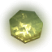
Ancient Coin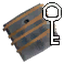
Cast: Intricate Key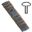
Cast: Nord Mace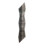
Klingebit av Dyrnwyn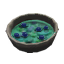
Mjødbase: Ratatosk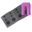
Mould: Trousers of the Caller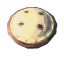
Rå loxepai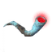
Sacrificial Blood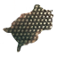
SkjellskinnMat og drikker
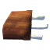
Grillet hjortekjøtt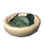
Kale Chips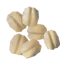
Oats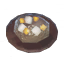
Speiderkabaret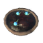
SvartsuppeVåpen, verktøy og ammunisjon
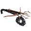
Grappling Hook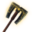
Jotunsbane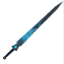
Nidhogg den tordnende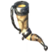
Odins mjødhorn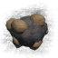
Røykbombe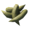
Stikkende agn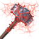
Thunderblood Mace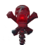
TrollstavRustninger, skjold og tilbehør
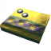
Enkel gul kjole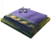
Gul tunika med kappe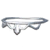
Witch CrownTrofeer
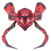
Dronningas trofé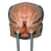
Gjalltrofé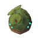
NøkktroféFisk og diverse
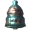
Klokke